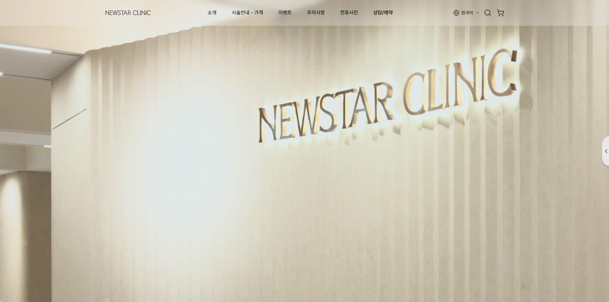
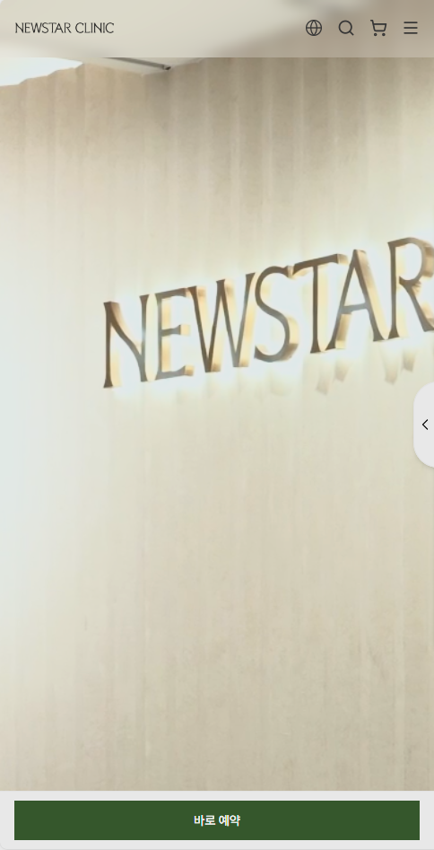
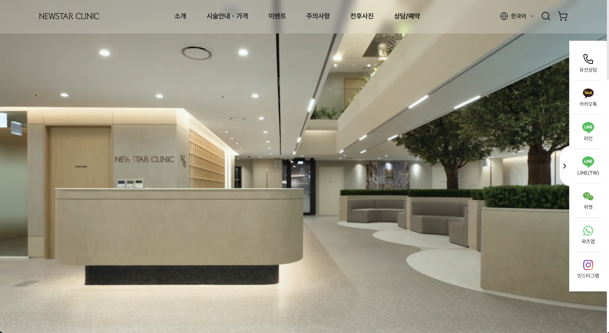
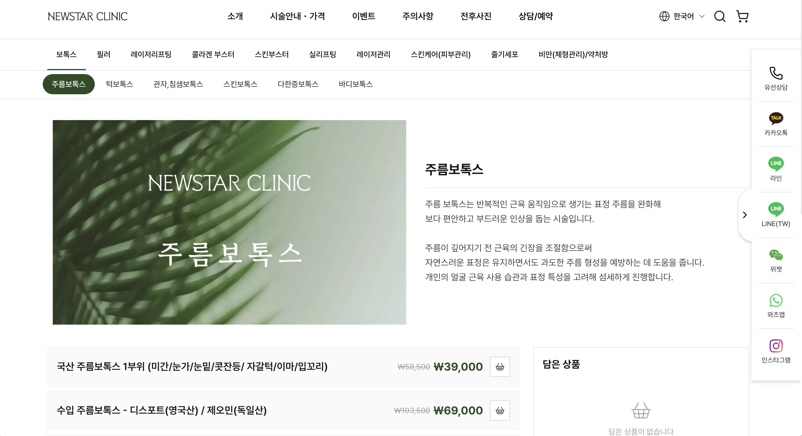
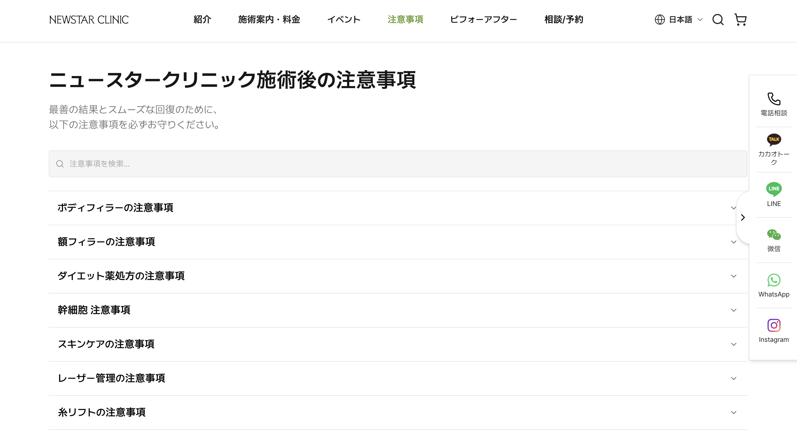
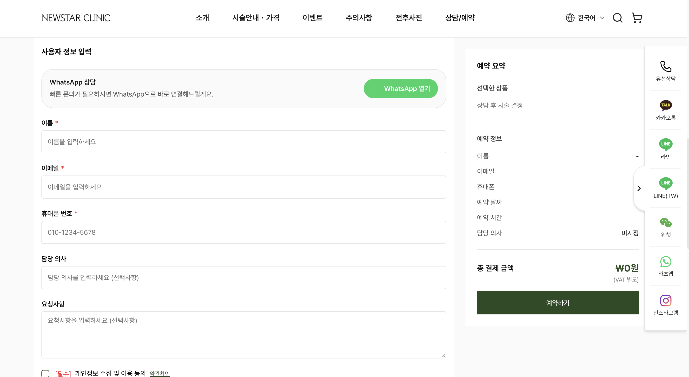
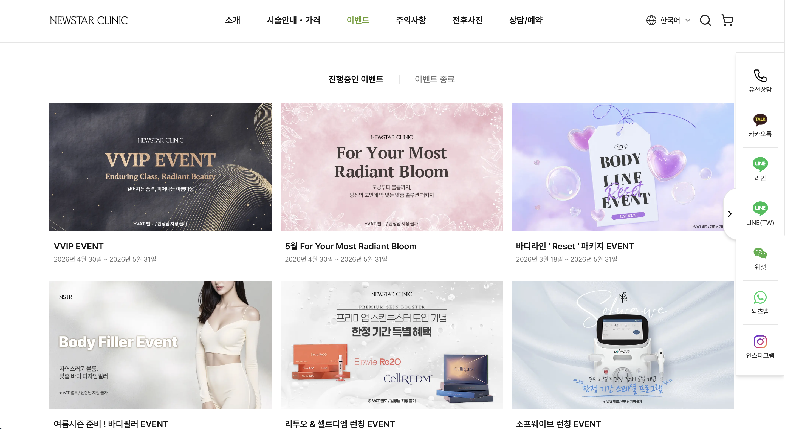
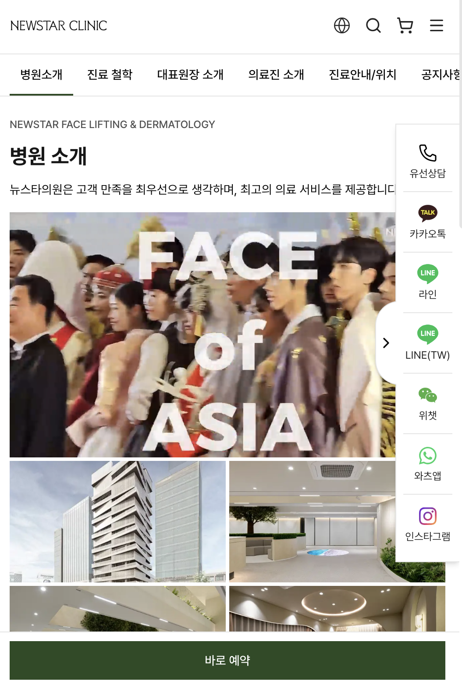
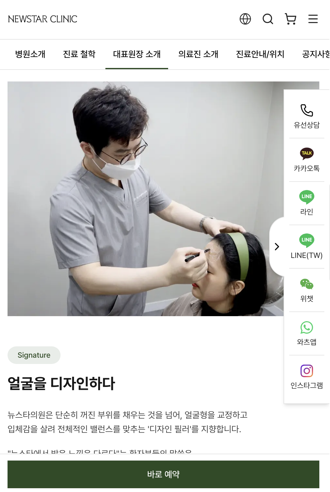

뉴스타의원
뉴스타의원은 최신 의료 장비와 전문의의 노하우를 기반으로 다양한 피부 고민 해결을 돕는 서울 강남 소재의 피부과 의료기관입니다.
국내 고객뿐 아니라 해외 환자들의 방문 비중도 높은 의료기관으로, 온라인 예약 및 고객 접근성을 강화하기 위한 홈페이지 리뉴얼 프로젝트를 CMD와 함께 진행하였습니다.
프로젝트 배경
뉴스타의원은 국내·해외 고객 모두가 보다 편리하게 이용할 수 있는 예약 중심의 홈페이지 구축이 필요한 상황이었습니다.
특히 기존 CRM 시스템과의 연동을 통해 온라인 예약부터 고객 관리까지 보다 효율적인 운영 구조를 구축하는 것이 중요했습니다.
CMD는 현재 사용 중인 CRM 업체의 소스코드를 활용하여 홈페이지 예약 기능과 CRM 시스템이 자동 연동되는 구조를 설계하였으며, 국내 고객은 물론 해외 환자들도 직접
온라인 예약이 가능한 예약형 홈페이지를 구축하였습니다.
또한 병원의 특장점을 잘 전달할 수 있는 영상 및 콘텐츠 중심의 구성과 함께 시술 정보 및 이벤트 가격을 쉽게 확인할 수 있는 사용자 중심 구조로 홈페이지를
기획·제작하였습니다.
전략 / 성과
- • CRM 연동 예약형 홈페이지 구축
- • 국내·해외 고객 대상 온라인 예약 시스템 구축
- • 홈페이지 구조 설계 및 브랜드 디자인 제작
- • 사용자 중심 UI/UX 기반 홈페이지 기획
- • 원내 홈페이지 운영을 위한 ADMIN 관리자 페이지 개발
- • 시술별 상세페이지 제작 및 상품 등록 기능 제공
- • simi이벤트 및 가격 정보 관리 기능 구축lique
- • 병원 특장점을 반영한 영상·콘텐츠 중심 페이지 구성







